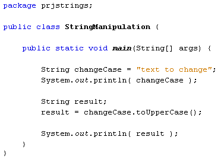
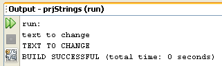

Converting to Upper and Lower Case in Java
Converting your Java strings of text to upper or lower case is fairly straightforward: just use the inbuilt methods toUpperCase and toLowerCase.
Start a new project for this, and add the following code:

The first two lines of code just set up a String variable to hold the text "text to change", and then we print it out. The third line sets of a second String variable called result. The fourth line is where we do the converting:
result = changeCase.toUpperCase( );
To use a string method you first type the string you want to work on. For us, this was the string in the variable called changeCase. Type a dot after the variable name and you'll see a list of available methods that you can use on your string. Select toUpperCase. (The method needs the empty round brackets after it.)
After Java has changed the word to uppercase letters, we're storing the new string into our result variable.
When the programme is run, the Output window displays the following:

But you don't have to store the converted word in a new variable. This would work just as well:
System.out.println( changeCase.toUpperCase( ) );
Here, Java will just get on with converting the string, without needing to assign the result to a new variable.
If you want to convert to lowercase, just use the toLowerCase method instead. It is used in exactly the same way as toUpperCase.
In the next part, you'll see how to compare strings in Java.